The original, as published: Tony R. Kuphaldt, Lessons In Electric Circuits, Harmonics in polyphase power systems. CC BY 4.0, https://creativecommons.org/licenses/by/4.0/. Imported as published, from https://www.ibiblio.org/kuphaldt/electricCircuits/AC/AC_10.html https://www.ibiblio.org/kuphaldt/electricCircuits/AC/AC_10.html
In the chapter on mixed-frequency signals, we explored the concept of harmonics in AC systems: frequencies that are integer multiples of the fundamental source frequency. With AC power systems where the source voltage waveform coming from an AC generator (alternator) is supposed to be a single-frequency sine wave, undistorted, there should be no harmonic content . . . ideally.
This would be true were it not for nonlinear components. Nonlinear components draw current disproportionately with respect to the source voltage, causing non-sinusoidal current waveforms. Examples of nonlinear components include gas-discharge lamps, semiconductor power-control devices (diodes, transistors, SCRs, TRIACs), transformers (primary winding magnetization current is usually non-sinusoidal due to the B/H saturation curve of the core), and electric motors (again, when magnetic fields within the motor's core operate near saturation levels). Even incandescent lamps generate slightly nonsinusoidal currents, as the filament resistance changes throughout the cycle due to rapid fluctuations in temperature. As we learned in the mixed-frequency chapter, any distortion of an otherwise sine-wave shaped waveform constitutes the presence of harmonic frequencies.
When the nonsinusoidal waveform in question is symmetrical above and below its average centerline, the harmonic frequencies will be odd integer multiples of the fundamental source frequency only, with no even integer multiples. (Figure below) Most nonlinear loads produce current waveforms like this, and so even-numbered harmonics (2nd, 4th, 6th, 8th, 10th, 12th, etc.) are absent or only minimally present in most AC power systems.
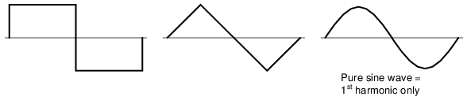
Examples of symmetrical waveforms -- odd harmonics only.
Examples of nonsymmetrical waveforms with even harmonics present are shown for reference in Figure below.
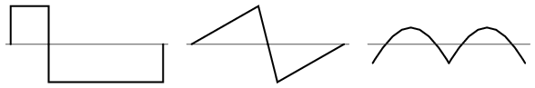
Examples of nonsymmetrical waveforms -- even harmonics present.
Even though half of the possible harmonic frequencies are eliminated by the typically symmetrical distortion of nonlinear loads, the odd harmonics can still cause problems. Some of these problems are general to all power systems, single-phase or otherwise. Transformer overheating due to eddy current losses, for example, can occur in any AC power system where there is significant harmonic content. However, there are some problems caused by harmonic currents that are specific to polyphase power systems, and it is these problems to which this section is specifically devoted.
It is helpful to be able to simulate nonlinear loads in SPICE so as to avoid a lot of complex mathematics and obtain a more intuitive understanding of harmonic effects. First, we'll begin our simulation with a very simple AC circuit: a single sine-wave voltage source with a purely linear load and all associated resistances: (Figure below)
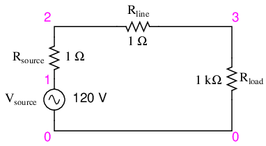
SPICE circuit with single sine-wave source.
The Rsource and Rline resistances in this circuit do more than just mimic the real world: they also provide convenient shunt resistances for measuring currents in the SPICE simulation: by reading voltage across a 1 Ω resistance, you obtain a direct indication of current through it, since E = IR.
A SPICE simulation of this circuit (SPICE listing: “linear load simulation”) with Fourier analysis on the voltage measured across Rline should show us the harmonic content of this circuit's line current. Being completely linear in nature, we should expect no harmonics other than the 1st (fundamental) of 60 Hz, assuming a 60 Hz source. See SPICE output “Fourier components of transient response v(2,3)” and Figure below.
linear load simulation vsource 1 0 sin(0 120 60 0 0) rsource 1 2 1 rline 2 3 1 rload 3 0 1k .options itl5=0 .tran 0.5m 30m 0 1u .plot tran v(2,3) .four 60 v(2,3) .end
Fourier components of transient response v(2,3) dc component = 4.028E-12 harmonic frequency Fourier normalized phase normalized no (hz) component component (deg) phase (deg) 1 6.000E+01 1.198E-01 1.000000 -72.000 0.000 2 1.200E+02 5.793E-12 0.000000 51.122 123.122 3 1.800E+02 7.407E-12 0.000000 -34.624 37.376 4 2.400E+02 9.056E-12 0.000000 4.267 76.267 5 3.000E+02 1.651E-11 0.000000 -83.461 -11.461 6 3.600E+02 3.931E-11 0.000000 36.399 108.399 7 4.200E+02 2.338E-11 0.000000 -41.343 30.657 8 4.800E+02 4.716E-11 0.000000 53.324 125.324 9 5.400E+02 3.453E-11 0.000000 21.691 93.691 total harmonic distortion = 0.000000 percent
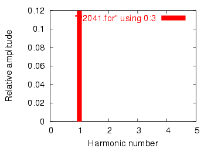
Frequency domain plot of single frequency component. See SPICE listing: “linear load simulation”.
A .plot command appears in the SPICE netlist, and normally this would result in a sine-wave graph output. In this case, however, I've purposely omitted the waveform display for brevity's sake -- the .plot command is in the netlist simply to satisfy a quirk of SPICE's Fourier transform function.
No discrete Fourier transform is perfect, and so we see very small harmonic currents indicated (in the pico-amp range!) for all frequencies up to the 9th harmonic (in the table ), which is as far as SPICE goes in performing Fourier analysis. We show 0.1198 amps (1.198E-01) for the “Fourier component” of the 1st harmonic, or the fundamental frequency, which is our expected load current: about 120 mA, given a source voltage of 120 volts and a load resistance of 1 kΩ.
Next, I'd like to simulate a nonlinear load so as to generate harmonic currents. This can be done in two fundamentally different ways. One way is to design a load using nonlinear components such as diodes or other semiconductor devices which are easy to simulate with SPICE. Another is to add some AC current sources in parallel with the load resistor. The latter method is often preferred by engineers for simulating harmonics, since current sources of known value lend themselves better to mathematical network analysis than components with highly complex response characteristics. Since we're letting SPICE do all the math work, the complexity of a semiconductor component would cause no trouble for us, but since current sources can be fine-tuned to produce any arbitrary amount of current (a convenient feature), I'll choose the latter approach shown in Figure below and SPICE listing: “Nonlinear load simulation”.
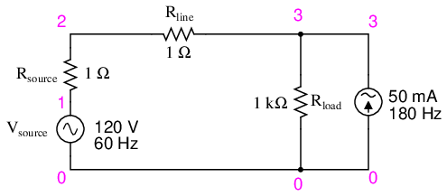
SPICE circuit: 60 Hz source with 3rd harmonic added.
Nonlinear load simulation vsource 1 0 sin(0 120 60 0 0) rsource 1 2 1 rline 2 3 1 rload 3 0 1k i3har 3 0 sin(0 50m 180 0 0) .options itl5=0 .tran 0.5m 30m 0 1u .plot tran v(2,3) .four 60 v(2,3) .end
In this circuit, we have a current source of 50 mA magnitude and a frequency of 180 Hz, which is three times the source frequency of 60 Hz. Connected in parallel with the 1 kΩ load resistor, its current will add with the resistor's to make a nonsinusoidal total line current. I'll show the waveform plot in Figure below just so you can see the effects of this 3rd-harmonic current on the total current, which would ordinarily be a plain sine wave.
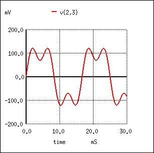
SPICE time-domain plot showing sum of 60 Hz source and 3rd harmonic of 180 Hz.
Fourier components of transient response v(2,3) dc component = 1.349E-11 harmonic frequency Fourier normalized phase normalized no (hz) component component (deg) phase (deg) 1 6.000E+01 1.198E-01 1.000000 -72.000 0.000 2 1.200E+02 1.609E-11 0.000000 67.570 139.570 3 1.800E+02 4.990E-02 0.416667 144.000 216.000 4 2.400E+02 1.074E-10 0.000000 -169.546 -97.546 5 3.000E+02 3.871E-11 0.000000 169.582 241.582 6 3.600E+02 5.736E-11 0.000000 140.845 212.845 7 4.200E+02 8.407E-11 0.000000 177.071 249.071 8 4.800E+02 1.329E-10 0.000000 156.772 228.772 9 5.400E+02 2.619E-10 0.000000 160.498 232.498 total harmonic distortion = 41.666663 percent
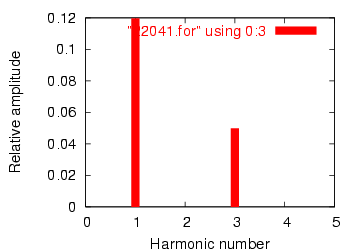
SPICE Fourier plot showing 60 Hz source and 3rd harmonic of 180 Hz.
In the Fourier analysis, (See Figure above and “Fourier components of transient response v(2,3)”) the mixed frequencies are unmixed and presented separately. Here we see the same 0.1198 amps of 60 Hz (fundamental) current as we did in the first simulation, but appearing in the 3rd harmonic row we see 49.9 mA: our 50 mA, 180 Hz current source at work. Why don't we see the entire 50 mA through the line? Because that current source is connected across the 1 kΩ load resistor, so some of its current is shunted through the load and never goes through the line back to the source. It's an inevitable consequence of this type of simulation, where one part of the load is “normal” (a resistor) and the other part is imitated by a current source.
If we were to add more current sources to the “load,” we would see further distortion of the line current waveform from the ideal sine-wave shape, and each of those harmonic currents would appear in the Fourier analysis breakdown. See Figure below and SPICE listing: “Nonlinear load simulation”.
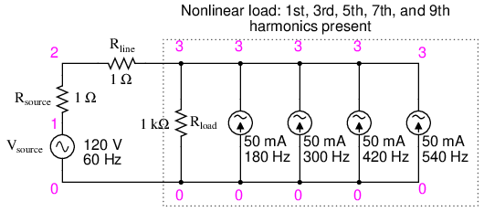
Nonlinear load: 1st, 3rd, 5th, 7th, and 9th harmonics present.
Nonlinear load simulation vsource 1 0 sin(0 120 60 0 0) rsource 1 2 1 rline 2 3 1 rload 3 0 1k i3har 3 0 sin(0 50m 180 0 0) i5har 3 0 sin(0 50m 300 0 0) i7har 3 0 sin(0 50m 420 0 0) i9har 3 0 sin(0 50m 540 0 0) .options itl5=0 .tran 0.5m 30m 0 1u .plot tran v(2,3) .four 60 v(2,3) .end
Fourier components of transient response v(2,3) dc component = 6.299E-11 harmonic frequency Fourier normalized phase normalized no (hz) component component (deg) phase (deg) 1 6.000E+01 1.198E-01 1.000000 -72.000 0.000 2 1.200E+02 1.900E-09 0.000000 -93.908 -21.908 3 1.800E+02 4.990E-02 0.416667 144.000 216.000 4 2.400E+02 5.469E-09 0.000000 -116.873 -44.873 5 3.000E+02 4.990E-02 0.416667 0.000 72.000 6 3.600E+02 6.271E-09 0.000000 85.062 157.062 7 4.200E+02 4.990E-02 0.416666 -144.000 -72.000 8 4.800E+02 2.742E-09 0.000000 -38.781 33.219 9 5.400E+02 4.990E-02 0.416666 72.000 144.000 total harmonic distortion = 83.333296 percent
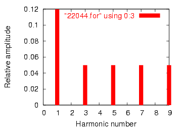
Fourier analysis: “Fourier components of transient response v(2,3)”.
As you can see from the Fourier analysis, (Figure above) every harmonic current source is equally represented in the line current, at 49.9 mA each. So far, this is just a single-phase power system simulation. Things get more interesting when we make it a three-phase simulation. Two Fourier analyses will be performed: one for the voltage across a line resistor, and one for the voltage across the neutral resistor. As before, reading voltages across fixed resistances of 1 Ω each gives direct indications of current through those resistors. See Figure below and SPICE listing “Y-Y source/load 4-wire system with harmonics”.
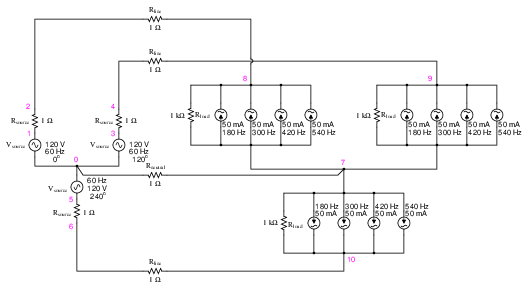
SPICE circuit: analysis of “line current” and “neutral current”, Y-Y source/load 4-wire system with harmonics.
Y-Y source/load 4-wire system with harmonics * * phase1 voltage source and r (120 v /_ 0 deg) vsource1 1 0 sin(0 120 60 0 0) rsource1 1 2 1 * * phase2 voltage source and r (120 v /_ 120 deg) vsource2 3 0 sin(0 120 60 5.55555m 0) rsource2 3 4 1 * * phase3 voltage source and r (120 v /_ 240 deg) vsource3 5 0 sin(0 120 60 11.1111m 0) rsource3 5 6 1 * * line and neutral wire resistances rline1 2 8 1 rline2 4 9 1 rline3 6 10 1 rneutral 0 7 1 * * phase 1 of load rload1 8 7 1k i3har1 8 7 sin(0 50m 180 0 0) i5har1 8 7 sin(0 50m 300 0 0) i7har1 8 7 sin(0 50m 420 0 0) i9har1 8 7 sin(0 50m 540 0 0) * * phase 2 of load rload2 9 7 1k i3har2 9 7 sin(0 50m 180 5.55555m 0) i5har2 9 7 sin(0 50m 300 5.55555m 0) i7har2 9 7 sin(0 50m 420 5.55555m 0) i9har2 9 7 sin(0 50m 540 5.55555m 0) * * phase 3 of load rload3 10 7 1k i3har3 10 7 sin(0 50m 180 11.1111m 0) i5har3 10 7 sin(0 50m 300 11.1111m 0) i7har3 10 7 sin(0 50m 420 11.1111m 0) i9har3 10 7 sin(0 50m 540 11.1111m 0) * * analysis stuff .options itl5=0 .tran 0.5m 100m 12m 1u .plot tran v(2,8) .four 60 v(2,8) .plot tran v(0,7) .four 60 v(0,7) .end
Fourier analysis of line current:
Fourier components of transient response v(2,8) dc component = -6.404E-12 harmonic frequency Fourier normalized phase normalized no (hz) component component (deg) phase (deg) 1 6.000E+01 1.198E-01 1.000000 0.000 0.000 2 1.200E+02 2.218E-10 0.000000 172.985 172.985 3 1.800E+02 4.975E-02 0.415423 0.000 0.000 4 2.400E+02 4.236E-10 0.000000 166.990 166.990 5 3.000E+02 4.990E-02 0.416667 0.000 0.000 6 3.600E+02 1.877E-10 0.000000 -147.146 -147.146 7 4.200E+02 4.990E-02 0.416666 0.000 0.000 8 4.800E+02 2.784E-10 0.000000 -148.811 -148.811 9 5.400E+02 4.975E-02 0.415422 0.000 0.000 total harmonic distortion = 83.209009 percent
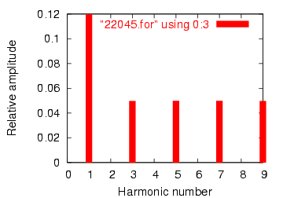
Fourier analysis of line current in balanced Y-Y system
Fourier analysis of neutral current:
Fourier components of transient response v(0,7) dc component = 1.819E-10 harmonic frequency Fourier normalized phase normalized no (hz) component component (deg) phase (deg) 1 6.000E+01 4.337E-07 1.000000 60.018 0.000 2 1.200E+02 1.869E-10 0.000431 91.206 31.188 3 1.800E+02 1.493E-01 344147.7638 -180.000 -240.018 4 2.400E+02 1.257E-09 0.002898 -21.103 -81.121 5 3.000E+02 9.023E-07 2.080596 119.981 59.963 6 3.600E+02 3.396E-10 0.000783 15.882 -44.136 7 4.200E+02 1.264E-06 2.913955 59.993 -0.025 8 4.800E+02 5.975E-10 0.001378 35.584 -24.434 9 5.400E+02 1.493E-01 344147.4889 -179.999 -240.017
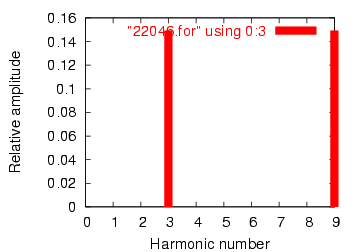
Fourier analysis of neutral current shows other than no harmonics! Compare to line current in Figure above
This is a balanced Y-Y power system, each phase identical to the single-phase AC system simulated earlier. Consequently, it should come as no surprise that the Fourier analysis for line current in one phase of the 3-phase system is nearly identical to the Fourier analysis for line current in the single-phase system: a fundamental (60 Hz) line current of 0.1198 amps, and odd harmonic currents of approximately 50 mA each. See Figure above and Fourier analysis: “Fourier components of transient response v(2,8)”
What should be surprising here is the analysis for the neutral conductor's current, as determined by the voltage drop across the Rneutral resistor between SPICE nodes 0 and 7. (Figure above) In a balanced 3-phase Y load, we would expect the neutral current to be zero. Each phase current -- which by itself would go through the neutral wire back to the supplying phase on the source Y -- should cancel each other in regard to the neutral conductor because they're all the same magnitude and all shifted 120o apart. In a system with no harmonic currents, this is what happens, leaving zero current through the neutral conductor. However, we cannot say the same for harmonic currents in the same system.
Note that the fundamental frequency (60 Hz, or the 1st harmonic) current is virtually absent from the neutral conductor. Our Fourier analysis shows only 0.4337 µA of 1st harmonic when reading voltage across Rneutral. The same may be said about the 5th and 7th harmonics, both of those currents having negligible magnitude. In contrast, the 3rd and 9th harmonics are strongly represented within the neutral conductor, with 149.3 mA (1.493E-01 volts across 1 Ω) each! This is very nearly 150 mA, or three times the current sources' values, individually. With three sources per harmonic frequency in the load, it appears our 3rd and 9th harmonic currents in each phase are adding to form the neutral current. See Fourier analysis: “Fourier components of transient response v(0,7) ”
This is exactly what's happening, though it might not be apparent why this is so. The key to understanding this is made clear in a time-domain graph of phase currents. Examine this plot of balanced phase currents over time, with a phase sequence of 1-2-3. (Figure below)
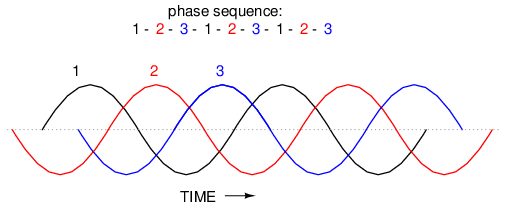
Phase sequence 1-2-3-1-2-3-1-2-3 of equally spaced waves.
With the three fundamental waveforms equally shifted across the time axis of the graph, it is easy to see how they would cancel each other to give a resultant current of zero in the neutral conductor. Let's consider, though, what a 3rd harmonic waveform for phase 1 would look like superimposed on the graph in Figure below.
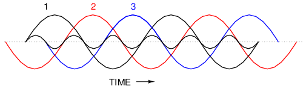
Third harmonic waveform for phase-1 superimposed on three-phase fundamental waveforms.
Observe how this harmonic waveform has the same phase relationship to the 2nd and 3rd fundamental waveforms as it does with the 1st: in each positive half-cycle of any of the fundamental waveforms, you will find exactly two positive half-cycles and one negative half-cycle of the harmonic waveform. What this means is that the 3rd-harmonic waveforms of three 120o phase-shifted fundamental-frequency waveforms are actually in phase with each other. The phase shift figure of 120o generally assumed in three-phase AC systems applies only to the fundamental frequencies, not to their harmonic multiples!
If we were to plot all three 3rd-harmonic waveforms on the same graph, we would see them precisely overlap and appear as a single, unified waveform (shown in bold in (Figure below)
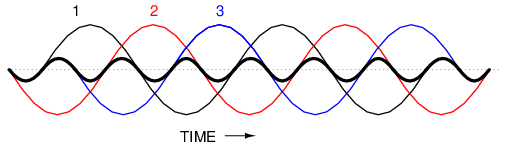
Third harmonics for phases 1, 2, 3 all coincide when superimposed on the fundamental three-phase waveforms.
For the more mathematically inclined, this principle may be expressed symbolically. Suppose that A represents one waveform and B another, both at the same frequency, but shifted 120o from each other in terms of phase. Let's call the 3rd harmonic of each waveform A' and B', respectively. The phase shift between A' and B' is not 120o (that is the phase shift between A and B), but 3 times that, because the A' and B' waveforms alternate three times as fast as A and B. The shift between waveforms is only accurately expressed in terms of phase angle when the same angular velocity is assumed. When relating waveforms of different frequency, the most accurate way to represent phase shift is in terms of time; and the time-shift between A' and B' is equivalent to 120o at a frequency three times lower, or 360o at the frequency of A' and B'. A phase shift of 360o is the same as a phase shift of 0o, which is to say no phase shift at all. Thus, A' and B' must be in phase with each other:
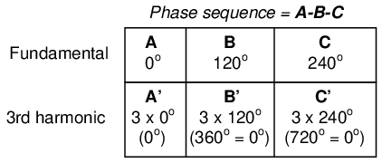
This characteristic of the 3rd harmonic in a three-phase system also holds true for any integer multiples of the 3rd harmonic. So, not only are the 3rd harmonic waveforms of each fundamental waveform in phase with each other, but so are the 6th harmonics, the 9th harmonics, the 12th harmonics, the 15th harmonics, the 18th harmonics, the 21st harmonics, and so on. Since only odd harmonics appear in systems where waveform distortion is symmetrical about the centerline -- and most nonlinear loads create symmetrical distortion -- even-numbered multiples of the 3rd harmonic (6th, 12th, 18th, etc.) are generally not significant, leaving only the odd-numbered multiples (3rd, 9th, 15th, 21st, etc.) to significantly contribute to neutral currents.
In polyphase power systems with some number of phases other than three, this effect occurs with harmonics of the same multiple. For instance, the harmonic currents that add in the neutral conductor of a star-connected 4-phase system where the phase shift between fundamental waveforms is 90o would be the 4th, 8th, 12th, 16th, 20th, and so on.
Due to their abundance and significance in three-phase power systems, the 3rd harmonic and its multiples have their own special name: triplen harmonics. All triplen harmonics add with each other in the neutral conductor of a 4-wire Y-connected load. In power systems containing substantial nonlinear loading, the triplen harmonic currents may be of great enough magnitude to cause neutral conductors to overheat. This is very problematic, as other safety concerns prohibit neutral conductors from having overcurrent protection, and thus there is no provision for automatic interruption of these high currents.
The following illustration shows how triplen harmonic currents created at the load add within the neutral conductor. The symbol “ω” is used to represent angular velocity, and is mathematically equivalent to 2πf. So, “ω” represents the fundamental frequency, “3ω ” represents the 3rd harmonic, “5ω” represents the 5th harmonic, and so on: (Figure below)
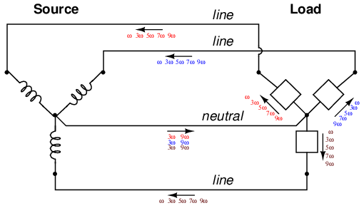
“Y-Y”Triplen source/load: Harmonic currents add in neutral conductor.
In an effort to mitigate these additive triplen currents, one might be tempted to remove the neutral wire entirely. If there is no neutral wire in which triplen currents can flow together, then they won't, right? Unfortunately, doing so just causes a different problem: the load's “Y” center-point will no longer be at the same potential as the source's, meaning that each phase of the load will receive a different voltage than what is produced by the source. We'll re-run the last SPICE simulation without the 1 Ω Rneutral resistor and see what happens:
Y-Y source/load (no neutral) with harmonics * * phase1 voltage source and r (120 v /_ 0 deg) vsource1 1 0 sin(0 120 60 0 0) rsource1 1 2 1 * * phase2 voltage source and r (120 v /_ 120 deg) vsource2 3 0 sin(0 120 60 5.55555m 0) rsource2 3 4 1 * * phase3 voltage source and r (120 v /_ 240 deg) vsource3 5 0 sin(0 120 60 11.1111m 0) rsource3 5 6 1 * * line resistances rline1 2 8 1 rline2 4 9 1 rline3 6 10 1 * * phase 1 of load rload1 8 7 1k i3har1 8 7 sin(0 50m 180 0 0) i5har1 8 7 sin(0 50m 300 0 0) i7har1 8 7 sin(0 50m 420 0 0) i9har1 8 7 sin(0 50m 540 0 0) * * phase 2 of load rload2 9 7 1k i3har2 9 7 sin(0 50m 180 5.55555m 0) i5har2 9 7 sin(0 50m 300 5.55555m 0) i7har2 9 7 sin(0 50m 420 5.55555m 0) i9har2 9 7 sin(0 50m 540 5.55555m 0) * * phase 3 of load rload3 10 7 1k i3har3 10 7 sin(0 50m 180 11.1111m 0) i5har3 10 7 sin(0 50m 300 11.1111m 0) i7har3 10 7 sin(0 50m 420 11.1111m 0) i9har3 10 7 sin(0 50m 540 11.1111m 0) * * analysis stuff .options itl5=0 .tran 0.5m 100m 12m 1u .plot tran v(2,8) .four 60 v(2,8) .plot tran v(0,7) .four 60 v(0,7) .plot tran v(8,7) .four 60 v(8,7) .end
Fourier analysis of line current:
Fourier components of transient response v(2,8) dc component = 5.423E-11 harmonic frequency Fourier normalized phase normalized no (hz) component component (deg) phase (deg) 1 6.000E+01 1.198E-01 1.000000 0.000 0.000 2 1.200E+02 2.388E-10 0.000000 158.016 158.016 3 1.800E+02 3.136E-07 0.000003 -90.009 -90.009 4 2.400E+02 5.963E-11 0.000000 -111.510 -111.510 5 3.000E+02 4.990E-02 0.416665 0.000 0.000 6 3.600E+02 8.606E-11 0.000000 -124.565 -124.565 7 4.200E+02 4.990E-02 0.416668 0.000 0.000 8 4.800E+02 8.126E-11 0.000000 -159.638 -159.638 9 5.400E+02 9.406E-07 0.000008 -90.005 -90.005 total harmonic distortion = 58.925539 percent
Fourier analysis of voltage between the two “Y” center-points:
Fourier components of transient response v(0,7) dc component = 6.093E-08 harmonic frequency Fourier normalized phase normalized no (hz) component component (deg) phase (deg) 1 6.000E+01 1.453E-04 1.000000 60.018 0.000 2 1.200E+02 6.263E-08 0.000431 91.206 31.188 3 1.800E+02 5.000E+01 344147.7879 -180.000 -240.018 4 2.400E+02 4.210E-07 0.002898 -21.103 -81.121 5 3.000E+02 3.023E-04 2.080596 119.981 59.963 6 3.600E+02 1.138E-07 0.000783 15.882 -44.136 7 4.200E+02 4.234E-04 2.913955 59.993 -0.025 8 4.800E+02 2.001E-07 0.001378 35.584 -24.434 9 5.400E+02 5.000E+01 344147.4728 -179.999 -240.017 total harmonic distortion = ************ percent
Fourier analysis of load phase voltage:
Fourier components of transient response v(8,7) dc component = 6.070E-08 harmonic frequency Fourier normalized phase normalized no (hz) component component (deg) phase (deg) 1 6.000E+01 1.198E+02 1.000000 0.000 0.000 2 1.200E+02 6.231E-08 0.000000 90.473 90.473 3 1.800E+02 5.000E+01 0.417500 -180.000 -180.000 4 2.400E+02 4.278E-07 0.000000 -19.747 -19.747 5 3.000E+02 9.995E-02 0.000835 179.850 179.850 6 3.600E+02 1.023E-07 0.000000 13.485 13.485 7 4.200E+02 9.959E-02 0.000832 179.790 179.789 8 4.800E+02 1.991E-07 0.000000 35.462 35.462 9 5.400E+02 5.000E+01 0.417499 -179.999 -179.999 total harmonic distortion = 59.043467 percent
Strange things are happening, indeed. First, we see that the triplen harmonic currents (3rd and 9th) all but disappear in the lines connecting load to source. The 5th and 7th harmonic currents are present at their normal levels (approximately 50 mA), but the 3rd and 9th harmonic currents are of negligible magnitude. Second, we see that there is substantial harmonic voltage between the two “Y” center-points, between which the neutral conductor used to connect. According to SPICE, there is 50 volts of both 3rd and 9th harmonic frequency between these two points, which is definitely not normal in a linear (no harmonics), balanced Y system. Finally, the voltage as measured across one of the load's phases (between nodes 8 and 7 in the SPICE analysis) likewise shows strong triplen harmonic voltages of 50 volts each.
Figure below is a graphical summary of the aforementioned effects.
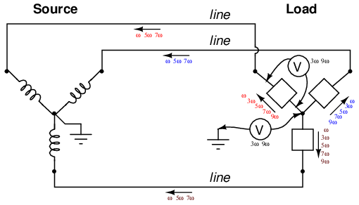
Three-wire “Y-Y” (no neutral) system: Triplen voltages appear between “Y” centers. Triplen voltages appear across load phases. Non-triplen currents appear in line conductors.
In summary, removal of the neutral conductor leads to a “hot” center-point on the load “Y”, and also to harmonic load phase voltages of equal magnitude, all comprised of triplen frequencies. In the previous simulation where we had a 4-wire, Y-connected system, the undesirable effect from harmonics was excessive neutral current, but at least each phase of the load received voltage nearly free of harmonics.
Since removing the neutral wire didn't seem to work in eliminating the problems caused by harmonics, perhaps switching to a Δ configuration will. Let's try a Δ source instead of a Y, keeping the load in its present Y configuration, and see what happens. The measured parameters will be line current (voltage across Rline, nodes 0 and 8), load phase voltage (nodes 8 and 7), and source phase current (voltage across Rsource, nodes 1 and 2). (Figure below)
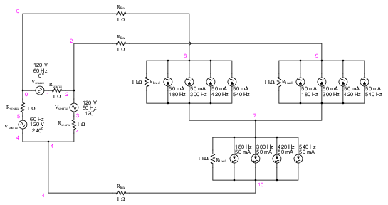
Delta-Y source/load with harmonics
Delta-Y source/load with harmonics * * phase1 voltage source and r (120 v /_ 0 deg) vsource1 1 0 sin(0 207.846 60 0 0) rsource1 1 2 1 * * phase2 voltage source and r (120 v /_ 120 deg) vsource2 3 2 sin(0 207.846 60 5.55555m 0) rsource2 3 4 1 * * phase3 voltage source and r (120 v /_ 240 deg) vsource3 5 4 sin(0 207.846 60 11.1111m 0) rsource3 5 0 1 * * line resistances rline1 0 8 1 rline2 2 9 1 rline3 4 10 1 * * phase 1 of load rload1 8 7 1k i3har1 8 7 sin(0 50m 180 9.72222m 0) i5har1 8 7 sin(0 50m 300 9.72222m 0) i7har1 8 7 sin(0 50m 420 9.72222m 0) i9har1 8 7 sin(0 50m 540 9.72222m 0) * * phase 2 of load rload2 9 7 1k i3har2 9 7 sin(0 50m 180 15.2777m 0) i5har2 9 7 sin(0 50m 300 15.2777m 0) i7har2 9 7 sin(0 50m 420 15.2777m 0) i9har2 9 7 sin(0 50m 540 15.2777m 0) * * phase 3 of load rload3 10 7 1k i3har3 10 7 sin(0 50m 180 4.16666m 0) i5har3 10 7 sin(0 50m 300 4.16666m 0) i7har3 10 7 sin(0 50m 420 4.16666m 0) i9har3 10 7 sin(0 50m 540 4.16666m 0) * * analysis stuff .options itl5=0 .tran 0.5m 100m 16m 1u .plot tran v(0,8) v(8,7) v(1,2) .four 60 v(0,8) v(8,7) v(1,2) .end
Note: the following paragraph is for those curious readers who follow every detail of my SPICE netlists. If you just want to find out what happens in the circuit, skip this paragraph! When simulating circuits having AC sources of differing frequency and differing phase, the only way to do it in SPICE is to set up the sources with a delay time or phase offset specified in seconds. Thus, the 0o source has these five specifying figures: “(0 207.846 60 0 0)”, which means 0 volts DC offset, 207.846 volts peak amplitude (120 times the square root of three, to ensure the load phase voltages remain at 120 volts each), 60 Hz, 0 time delay, and 0 damping factor. The 120o phase-shifted source has these figures: “(0 207.846 60 5.55555m 0)”, all the same as the first except for the time delay factor of 5.55555 milliseconds, or 1/3 of the full period of 16.6667 milliseconds for a 60 Hz waveform. The 240o source must be time-delayed twice that amount, equivalent to a fraction of 240/360 of 16.6667 milliseconds, or 11.1111 milliseconds. This is for the Δ-connected source. The Y-connected load, on the other hand, requires a different set of time-delay figures for its harmonic current sources, because the phase voltages in a Y load are not in phase with the phase voltages of a Δ source. If Δ source voltages VAC, VBA, and VCB are referenced at 0o, 120o, and 240o, respectively, then “Y” load voltages VA, VB, and VC will have phase angles of -30o, 90o, and 210o, respectively. This is an intrinsic property of all Δ-Y circuits and not a quirk of SPICE. Therefore, when I specified the delay times for the harmonic sources, I had to set them at 15.2777 milliseconds (-30o, or +330o), 4.16666 milliseconds (90o), and 9.72222 milliseconds (210o). One final note: when delaying AC sources in SPICE, they don't “turn on” until their delay time has elapsed, which means any mathematical analysis up to that point in time will be in error. Consequently, I set the .tran transient analysis line to hold off analysis until 16 milliseconds after start, which gives all sources in the netlist time to engage before any analysis takes place.
The result of this analysis is almost as disappointing as the last. (Figure below) Line currents remain unchanged (the only substantial harmonic content being the 5th and 7th harmonics), and load phase voltages remain unchanged as well, with a full 50 volts of triplen harmonic (3rd and 9th) frequencies across each load component. Source phase current is a fraction of the line current, which should come as no surprise. Both 5th and 7th harmonics are represented there, with negligible triplen harmonics:
Fourier analysis of line current:
Fourier components of transient response v(0,8) dc component = -6.850E-11 harmonic frequency Fourier normalized phase normalized no (hz) component component (deg) phase (deg) 1 6.000E+01 1.198E-01 1.000000 150.000 0.000 2 1.200E+02 2.491E-11 0.000000 159.723 9.722 3 1.800E+02 1.506E-06 0.000013 0.005 -149.996 4 2.400E+02 2.033E-11 0.000000 52.772 -97.228 5 3.000E+02 4.994E-02 0.416682 30.002 -119.998 6 3.600E+02 1.234E-11 0.000000 57.802 -92.198 7 4.200E+02 4.993E-02 0.416644 -29.998 -179.998 8 4.800E+02 8.024E-11 0.000000 -174.200 -324.200 9 5.400E+02 4.518E-06 0.000038 -179.995 -329.995 total harmonic distortion = 58.925038 percent
Fourier analysis of load phase voltage:
Fourier components of transient response v(8,7) dc component = 1.259E-08 harmonic frequency Fourier normalized phase normalized no (hz) component component (deg) phase (deg) 1 6.000E+01 1.198E+02 1.000000 150.000 0.000 2 1.200E+02 1.941E-07 0.000000 49.693 -100.307 3 1.800E+02 5.000E+01 0.417222 -89.998 -239.998 4 2.400E+02 1.519E-07 0.000000 66.397 -83.603 5 3.000E+02 6.466E-02 0.000540 -151.112 -301.112 6 3.600E+02 2.433E-07 0.000000 68.162 -81.838 7 4.200E+02 6.931E-02 0.000578 148.548 -1.453 8 4.800E+02 2.398E-07 0.000000 -174.897 -324.897 9 5.400E+02 5.000E+01 0.417221 90.006 -59.995 total harmonic distortion = 59.004109 percent
Fourier analysis of source phase current:
Fourier components of transient response v(1,2) dc component = 3.564E-11 harmonic frequency Fourier normalized phase normalized no (hz) component component (deg) phase (deg) 1 6.000E+01 6.906E-02 1.000000 -0.181 0.000 2 1.200E+02 1.525E-11 0.000000 -156.674 -156.493 3 1.800E+02 1.422E-06 0.000021 -179.996 -179.815 4 2.400E+02 2.949E-11 0.000000 -110.570 -110.390 5 3.000E+02 2.883E-02 0.417440 -179.996 -179.815 6 3.600E+02 2.324E-11 0.000000 -91.926 -91.745 7 4.200E+02 2.883E-02 0.417398 -179.994 -179.813 8 4.800E+02 4.140E-11 0.000000 -39.875 -39.694 9 5.400E+02 4.267E-06 0.000062 0.006 0.186 total harmonic distortion = 59.031969 percent
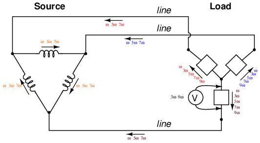
“Δ-Y” source/load: Triplen voltages appear across load phases. Non-triplen currents appear in line conductors and in source phase windings.
Really, the only advantage of the Δ-Y configuration from the standpoint of harmonics is that there is no longer a center-point at the load posing a shock hazard. Otherwise, the load components receive the same harmonically-rich voltages and the lines see the same currents as in a three-wire Y system.
If we were to reconfigure the system into a Δ-Δ arrangement, (Figure below) that should guarantee that each load component receives non-harmonic voltage, since each load phase would be directly connected in parallel with each source phase. The complete lack of any neutral wires or “center points” in a Δ-Δ system prevents strange voltages or additive currents from occurring. It would seem to be the ideal solution. Let's simulate and observe, analyzing line current, load phase voltage, and source phase current. See SPICE listing: “Delta-Delta source/load with harmonics”, “Fourier analysis: Fourier components of transient response v(0,6)”, and “Fourier components of transient response v(2,1)”.
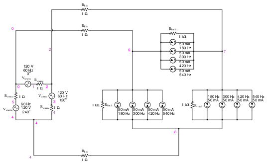
Delta-Delta source/load with harmonics.
Delta-Delta source/load with harmonics * * phase1 voltage source and r (120 v /_ 0 deg) vsource1 1 0 sin(0 120 60 0 0) rsource1 1 2 1 * * phase2 voltage source and r (120 v /_ 120 deg) vsource2 3 2 sin(0 120 60 5.55555m 0) rsource2 3 4 1 * * phase3 voltage source and r (120 v /_ 240 deg) vsource3 5 4 sin(0 120 60 11.1111m 0) rsource3 5 0 1 * * line resistances rline1 0 6 1 rline2 2 7 1 rline3 4 8 1 * * phase 1 of load rload1 7 6 1k i3har1 7 6 sin(0 50m 180 0 0) i5har1 7 6 sin(0 50m 300 0 0) i7har1 7 6 sin(0 50m 420 0 0) i9har1 7 6 sin(0 50m 540 0 0) * * phase 2 of load rload2 8 7 1k i3har2 8 7 sin(0 50m 180 5.55555m 0) i5har2 8 7 sin(0 50m 300 5.55555m 0) i7har2 8 7 sin(0 50m 420 5.55555m 0) i9har2 8 7 sin(0 50m 540 5.55555m 0) * * phase 3 of load rload3 6 8 1k i3har3 6 8 sin(0 50m 180 11.1111m 0) i5har3 6 8 sin(0 50m 300 11.1111m 0) i7har3 6 8 sin(0 50m 420 11.1111m 0) i9har3 6 8 sin(0 50m 540 11.1111m 0) * * analysis stuff .options itl5=0 .tran 0.5m 100m 16m 1u .plot tran v(0,6) v(7,6) v(2,1) i(3har1) .four 60 v(0,6) v(7,6) v(2,1) .end
Fourier analysis of line current:
Fourier components of transient response v(0,6) dc component = -6.007E-11 harmonic frequency Fourier normalized phase normalized no (hz) component component (deg) phase (deg) 1 6.000E+01 2.070E-01 1.000000 150.000 0.000 2 1.200E+02 5.480E-11 0.000000 156.666 6.666 3 1.800E+02 6.257E-07 0.000003 89.990 -60.010 4 2.400E+02 4.911E-11 0.000000 8.187 -141.813 5 3.000E+02 8.626E-02 0.416664 -149.999 -300.000 6 3.600E+02 1.089E-10 0.000000 -31.997 -181.997 7 4.200E+02 8.626E-02 0.416669 150.001 0.001 8 4.800E+02 1.578E-10 0.000000 -63.940 -213.940 9 5.400E+02 1.877E-06 0.000009 89.987 -60.013 total harmonic distortion = 58.925538 percent
Fourier analysis of load phase voltage:
Fourier components of transient response v(7,6) dc component = -5.680E-10 harmonic frequency Fourier normalized phase normalized no (hz) component component (deg) phase (deg) 1 6.000E+01 1.195E+02 1.000000 0.000 0.000 2 1.200E+02 1.039E-09 0.000000 144.749 144.749 3 1.800E+02 1.251E-06 0.000000 89.974 89.974 4 2.400E+02 4.215E-10 0.000000 36.127 36.127 5 3.000E+02 1.992E-01 0.001667 -180.000 -180.000 6 3.600E+02 2.499E-09 0.000000 -4.760 -4.760 7 4.200E+02 1.992E-01 0.001667 -180.000 -180.000 8 4.800E+02 2.951E-09 0.000000 -151.385 -151.385 9 5.400E+02 3.752E-06 0.000000 89.905 89.905 total harmonic distortion = 0.235702 percent
Fourier analysis of source phase current:
Fourier components of transient response v(2,1) dc component = -1.923E-12 harmonic frequency Fourier normalized phase normalized no (hz) component component (deg) phase (deg) 1 6.000E+01 1.194E-01 1.000000 179.940 0.000 2 1.200E+02 2.569E-11 0.000000 133.491 -46.449 3 1.800E+02 3.129E-07 0.000003 89.985 -89.955 4 2.400E+02 2.657E-11 0.000000 23.368 -156.571 5 3.000E+02 4.980E-02 0.416918 -180.000 -359.939 6 3.600E+02 4.595E-11 0.000000 -22.475 -202.415 7 4.200E+02 4.980E-02 0.416921 -180.000 -359.939 8 4.800E+02 7.385E-11 0.000000 -63.759 -243.699 9 5.400E+02 9.385E-07 0.000008 89.991 -89.949 total harmonic distortion = 58.961298 percent
As predicted earlier, the load phase voltage is almost a pure sine-wave, with negligible harmonic content, thanks to the direct connection with the source phases in a Δ-Δ system. But what happened to the triplen harmonics? The 3rd and 9th harmonic frequencies don't appear in any substantial amount in the line current, nor in the load phase voltage, nor in the source phase current! We know that triplen currents exist, because the 3rd and 9th harmonic current sources are intentionally placed in the phases of the load, but where did those currents go?
Remember that the triplen harmonics of 120o phase-shifted fundamental frequencies are in phase with each other. Note the directions that the arrows of the current sources within the load phases are pointing, and think about what would happen if the 3rd and 9th harmonic sources were DC sources instead. What we would have is current circulating within the loop formed by the Δ-connected phases. This is where the triplen harmonic currents have gone: they stay within the Δ of the load, never reaching the line conductors or the windings of the source. These results may be graphically summarized as such in Figure below.
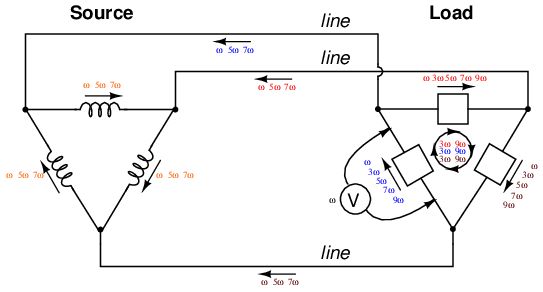
Δ-Δ source/load: Load phases receive undistorted sinewave voltages. Triplen currents are confined to circulate within load phases. Non-triplen currents apprear in line conductors and in source phase windings.
This is a major benefit of the Δ-Δ system configuration: triplen harmonic currents remain confined in whatever set of components create them, and do not “spread” to other parts of the system.
In the last section, we saw how the 3rd harmonic and all of its integer multiples (collectively called triplen harmonics) generated by 120o phase-shifted fundamental waveforms are actually in phase with each other. In a 60 Hz three-phase power system, where phases A, B, and C are 120o apart, the third-harmonic multiples of those frequencies (180 Hz) fall perfectly into phase with each other. This can be thought of in graphical terms, (Figure below) and/or in mathematical terms:
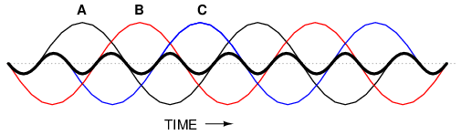
Harmonic currents of Phases A, B, C all coincide, that is, no rotation.
If we extend the mathematical table to include higher odd-numbered harmonics, we will notice an interesting pattern develop with regard to the rotation or sequence of the harmonic frequencies:
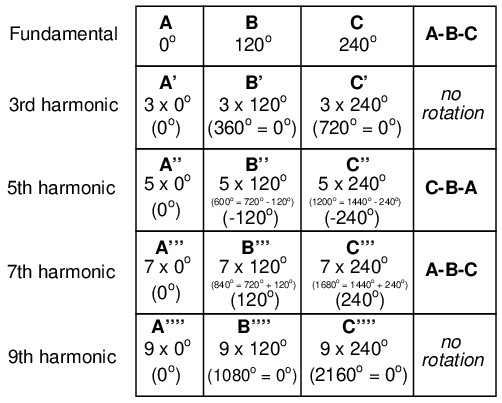
Harmonics such as the 7th, which “rotate” with the same sequence as the fundamental, are called positive sequence. Harmonics such as the 5th, which “rotate” in the opposite sequence as the fundamental, are called negative sequence. Triplen harmonics (3rd and 9th shown in this table) which don't “rotate” at all because they're in phase with each other, are called zero sequence.
This pattern of positive-zero-negative-positive continues indefinitely for all odd-numbered harmonics, lending itself to expression in a table like this:
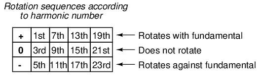
Sequence especially matters when we're dealing with AC motors, since the mechanical rotation of the rotor depends on the torque produced by the sequential “rotation” of the applied 3-phase power. Positive-sequence frequencies work to push the rotor in the proper direction, whereas negative-sequence frequencies actually work against the direction of the rotor's rotation. Zero-sequence frequencies neither contribute to nor detract from the rotor's torque. An excess of negative-sequence harmonics (5th, 11th, 17th, and/or 23rd) in the power supplied to a three-phase AC motor will result in a degradation of performance and possible overheating. Since the higher-order harmonics tend to be attenuated more by system inductances and magnetic core losses, and generally originate with less amplitude anyway, the primary harmonic of concern is the 5th, which is 300 Hz in 60 Hz power systems and 250 Hz in 50 Hz power systems.